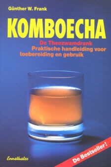
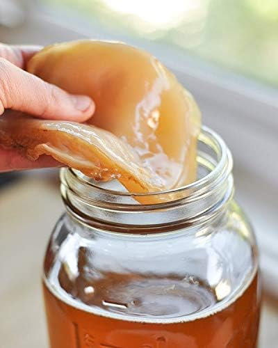
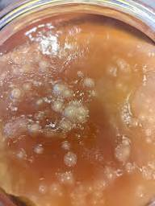

GENEZING
(onderaan nog meer gezonheids
tipjes)
| Kombucha - De
Theezwamdrank De
behandeling van kanker in de Sowjet-Unie
© van Günther W. Frank |
 |
Uit het boek van Günther W. Frank: "Komboecha - De Theezwamdrank. Praktische handleiding voor toebereiding en gebruik" ISBN 3 85068 334 6. Editeur: W. Ennsthaler, A-4402 Steyr, Autriche 150 pages, 10 illustres, Format: 16,5 x 24 cm Het bestellformulier vindt U hier: www.kombu.de/order.htm
|
| Opnieuw:
Indien u moeilijkheden hebt om het boek in uw boekhandel aan te
schaffen, kunt u het Kombucha-boek van Günther W. Frank rechtstreeks
bij de auteur aan een voordelige prijs bestellen : 16.50 €, inclusief
verzendingskosten. Wereldwijde levering is mogelijk. Het boek is
verkrijgbaar in het Nederlands,
Duits, Engels, Frans en Spaans.
Het bestellformulier vindt U hier: www.kombu.de/order.htm |
|
Het volgende versiag is afkomstig van een man die tussen 1946 en 1954 aan de Lomonossow-universiteit in Moskou en aan de militaire Academie voor geneeskunde in Leningrad medicijnen heeft gestudeerd. Ondertussen is hij naar West-Duitsland geëmigreerd, waar hij nu woont. Naam en adres zijn mij bekend, maar de auteur heeft liever niet dat ze aan de openbaarheid prijsgegeven worden. 1k dank hem hartelijk voor zijn toestemming om dit interessante achtergrondverslag over te nemen.
- Uit de geschiedenis der geneeskunde in de USSR.
- Episode van 1951 tot 1953 en de voordelen daaruit voor de Verenigde Staten sinds 1983.
- Achtergronden bij het afbreken van een veelbelovend onderzoeksproject over de behandeling van kanker in de Sowjet-Unie
- De genezing van de Amerikaanse ex-presiden Ronald Reagan van kanker met uitzaaiingen.
Na de Tweede Wereldoorlog nam ook in de Sowjet-Unie het aantal gevallen van kanker jaarlijks toe. Begin 1951 besloten de Academie der Wetenschappen van de USSR en het Centrale Onkologische Onderzoeksinstituut in Moskou om, naast andere essentiëele onderzoeksmaatregelen, de statistische gegevens over de frequentie-afwijkingen van het aantal kankergevallen in de afzonderlijke regio's, districten en steden in de USSR te gaan onderzocken.Daarbij zouden vooral de Ieefgewoonten en milieuomstandigheden van de bevolkingsgroepen in de districten waar bijzonder weinig kanker voorkwam, bestudeerd en getoetst worden.Op deze manier wilde men - op welhaast criminalistische wijze - nieuwe inzichten verwerven in de pathogenese van kanker en, indien mogelijk, een effectieve therapie ontwikkelen.In dit opzicht bleken vooral de rayons Ssolikamsk en Beresniki in het district Perm aan de Kama in het oentrale gedeelte van de westelijke Oeral opvallende resultaten op te leveren. Kanker kwam hier nauwelijks voor, alleen bij mensen die van buiten af waren gekomen.
De milieu-omstandigheden waren hier niet veel beter dan inde oude industriegebieden. In de rayons Ssolikamsk en Beresniki was zich een nieuwe industrie fors aan het ontwikkelen. Een industrie die door haar uitstoot veel gevaarlijker was dan de oude industrieën in andere gedeelten van de Sowjet-Unie: kali-, lood-, kwik-, en asbestmijnen en de daarbij behorende gevaarlijke verwerkingsindustrieën.De bevolkingsdichtheid was weliswaar lager, maar de uitstoot een stuk gevaarlijker. Reeds in die tijd stierven hier de bomen door de vervuiling en ook was er sprake van vissterfte in de Kama.Er werden twee onderzoeksteams, elk met tien wetenschappelijke medewerkers en de nodige hulpkrachten, naar toe gestuurd. Dr. Molodejew leidde het team in het rayon Ssolikamsk, en Dr. Grigorijew het team in Beresniki.Bij dit onderzoek gebruikte men zeer langdurige en uitgebreide onderzoekstechnieken, maar die hoeven hier niet uitvoerig beschreven te worden.Onderzocht werden o.a.: de herkomst van de bevolking, etnische verschillen, woon- en leefomstandigheden, eet-, drink-, arbeids-, en slaapgewoonten, vrijetijdsbesteding, leeftijdsgroep en tal van andere factoren.Op geen enkel punkt duidden de gegevens van al die factoren, die nog verder waren onderverdeeld, op wezenlijke verschillen met andere bevolkingsgroepen in andere delen van de Sowjet-Unie.De laboratoriumtechnische metingen van de industrie-emissies en de uitwerkingen ervan op bodem-, en watergesteldheid, op flora en fauna lieten zeer ongunstige resultaten zien.Als door deze ongunstige resultaten de tegenstelling tot het geringe aantal kankerpatiënten niet nog scherper was afgetekend, dan zou het onderzoek waarschijnlijk al lang zijn gestaakt.
Toch brachten de langdurige onderzoekingen niets van essentieel belang aan het licht. Het viel alleen op dat, ondanks een in verhouding hoge comsumptie van alcohol en nicotine, de arbeidsmoraal wezenlijk beter was dan in andere delen van de USSR. Het ziekteverzuim lag veel lager. Delicten ten gevolge van alcoholgebruik kwamen zelden voor. Ondanks de hoge alcoholconsumptie kwamen er nauwelijks gevallen van dronkenschap voor. Het leek alsof de mensen hier meer alcohol konden verdragen. Aan de arbeids- en produktienormen werd altijd voldaan, ze werden vaak zelfs overschreden. De bevolking was over het algemeen goedgemutst. Voorlopig was er echter geen verklaring te vinden voor al deze verschijnselen. Ook was er weinig kans dat dat in de nabije toekomst zou gebeuren.Op een warme zomerdag bezocht teamleider dr. Molodejew persoonlijk het huis van een te interviewen gezin. De man en vrouw waren naar hun werk en de kinderen naar de kleuterschool, respectievelijk crèche. Alleen de oude oma, die het huishouden deed, was aanwezig. Dat deed ze nog voor meer familieleden, daarom kon ze niet ook nog op de kleinkinderen letten. De vrouw bood dr. Molodejew een frisdrank aan omdat het zo vreselijk warm was. Hij accepteerde met graagte. Dr. Molodejew kende het drankje niet, maar vond het aangenaam, verfrissend en lekker van smaak. Toen hij vroeg wat voor een drankje het was, vertelde ze hem dat het "theekwas" was.
Dr. Molodejew was verbaasd. Hij kende alleen kwas, die door gisting uit brood was toebereid. Hij vroeg erop door en de oude vrouw vertelde hem dat "theekwas" niet uit brood ontstaat, maar uit zoete thee, die met behulp van de "theezwam" of "theeschimmel" wordt vergist. Toen de oude vrouw merkte, dat dr. M. maar moeizaam begreep wat ze bedoelde, liet ze hem in een klein zijkamertje een stuk of 10 grote aarden potten zien die naast elkaar op planken stonden en met een linnen doek of een stuk neteldoek waren dichtgebonden. Ze knoopte een pot open. Het rook sterk naar gisting. Bovenop dreef groot, rond en plat als een omelet een grijs-bruine gelatineachtige structuur, die er ongeveer als een kwal uitzag. "Niet bepaald smakelijk", vond dr. M. "Maar wel erg gezond, goed verteerbaar en bovendien gratis," antwoordde de vrouw.Vervolgens beschreef ze dr. M. de produktieprocedure tot in de puntjes. Men vult een aarden pot met 3 tot 5 liter warme zwarte thee (1 theelepel thee op 1 liter water), die men met 100 tot 150 gram suiker per liter heeft gezoet. Als de thee nog slechts handwarm is, legt men er een oude of nieuwe zwam boven op, nadat men er van te voren een kopje theekwas bijgegoten heeft. Daarna wordt de pot met een linnen doek of een stuk neteldoek dichtgebonden. Nadat die zo 10-12 dagen heeft gestaan (er vindt een gistingsproces plaats) bij een temperatuur van de tussen de 20 en de 30° C is de nieuwe theekwas, oftewel "zwamwijn" klaar.Natuurlijk vermeerdert de zwam zich van tijd tot tijd door een cylindrische dwarssplijting. Maar men kan ook tandradvormige stukjes zwam ter grootte van een muntstuk van 3 of 4 kopeke (zo groot als een gulden) met een scherp mes van de rand van de zwam afsnijden en die in kleine potten (150 ml) op zwarte thee met Komboechadrank (verhouding 1:1), gezoet zoals als eerder aangegeven, zetten. Na drie of vier dagen heeft men dan nieuwe zwammen die men dan in eerste instantie op 2 liter thee met Komboechadrank kan laten inwerken.
De oude vrouw vertelde met stelligheid, dat er waarschijnlijk in het hele rayon Ssolikamsk niet een familie was, die geen "zwamwijn" produceerde en nuttigde. Dat zou al sinds eeuwen zo zijn. Geleerde reizigers zouden hem toentertijd uit China hebben meegebracht. De Chinezen zouden er weer via de Japanners aan gekomen zijn. De geleerden zouden de zwam, waarmee men van theewijn kan maken, aan de tsaar als geschenk hebben aangeboden. De tsaar Wu na enige tijd tot de conclusie zijn gekomen dat hij de "wijn" toch niet zo lekker vond. Hij liet hem onder het volk verspreiden met de mededeling dat nu iedereen uit thee heerlijke wijn kon toebereiden. De kleine man zou dan niet meer zo begerig zijn en dronken werd hij van deze "wijn" ook niet.Door een ongeveer even zeldaam toeval stuitte ook het team van dr. Grigorijew bij de onderzoekingen in Beresniki op deze voor het overige vrij onbekende theezwam. Langdurig en grondig onderzoek bevestigde, dat in beide rayons nauwelijks een huishouden de "theezwam" niet bezat, de merkwaardige "zwamwijn" niet produceerde en in grote hoeveelheden dronk. Het was een soort goedkope en zeer goed verteerbare volksdrank. Zelfs alcoholisten dronken er voor en na de comsumptie van alcohol rijkelijk van. Het opmerkelijke daarvan was, dat de drinkebroers nauwelijks tekenen van dronkenschap vertoonden, zelfs als ze rijkelijk alcohol geconsumeerd hadden. Delicten en ongelukken onder invloed van alcohol - op de weg of op het werk - kwamen uiterst zelden voor.De alcohol- en tabakconsumptie lagen in de onderzochte gebieden zelfs hoger dan in andere rayons van de USSR.
Nu moesten de onderzoeksresultaten wetenschappelijk verwerkt worden. De moeilijkheid daarbij was dat geen enkel lid van de beide teams de wonderbaarlijke "theezwam" met wetenschappelilke precisie kon determineren of definiëren. Maar het Centrale Bacteriologische Instituut van Moskou kon.al snel uitkomst bieden. Op basis van kleurenfoto's en monsters werd met zekerheid vastgesteld dat het om de weinig bekende Komboecha ging. De Komboecha zou een Japanse theezwam zijn - ook theeschimmel -, die men zich moet voorstellen als een soort dril uit het Bacterium xylinum met nestvormig erin liggende gistcellen van de soort Saccharomyces. Tot deze symbiose behoren verder: Saccharomyces ludwigii, Saccharomyces apiculatus-typen, Bacterium xylinoides, Bacterium gluconicum, Schizosaccharomyces pombe, Acetobacter ketogenum, Torulasoorten, Pichia fermentans en andere gistsoorten.Het was ook bekend dat deze Komboecha in enkele gedeelten van de Sowjet-Unie bij de tocbereiding van een appelwijnachtige drank, "theekwas", gebruikt werd.Veel meer wist ook het Centrale Bacteriologische Instituut in Moskou niet over de Komboecha. Het instituut putte zijn wijsheid vooral uit het handboek van de Duitser W. HENNEBERG: "Handbuch der Gärungsbakteriologie" deel 2 uit 1926.Maar ook het Duitse handboek wist niets te melden over de biochemische functies van deze symbiose K9MBOECHA. Nu werd het Centrale Biologisch-Biochemische Instituut in Moskou geraadpleegd.
Tegenwoordig weet men dat de zogenaamde "theezwam Komboecha" geen zwam, maar cen korstmos is. De Komboecha is een symbiose- van gisteellen en bacteriën, een membraan van zwamkorstmossen, die zich niet door middel van sporen - zoals de schimmel - - maar door middel van broedknoppen voortplanten. (Opmerking van Günther W. Frank: Met excuses aan de auteur van dit artikel, maar ik kan het er niet mee eens zijn dat de Komboecha wordt ingedeeld bij de korstmossen. Een korstmos is een leefgemeenschap van algen en schimmels en heeft licht als energiebron nodig voor de bij algen typische fotosynthese, waarbij chlorofyl wordt aangemaakt. De Komboecha daarentegen gedijt ook goed in het duister, juist omdat ze geen voor de korstmossen so typische algenkomponent bezit.)
Uitvoerig onderzoek heeft uitgewezen dat de Komboecha naast tal van andere, niet gemakkelijk te definiëren antibiotische stoffen vooral Glucuronzuur, vitamine B1, B2, B3, B6 en B12, alsinede foliumzuur en rechtsdraaiend, dus D-Melkzuur (+) produceert.Vooral van belang waren hier het Glucuronzuur en het rechtsdraaiende D-Melkzuur (+). Het Glucuronzuur ontstaat in voldoende mate in de gezonde lever en is tot nu toe nauwelijks synthetisch na te bootsen. In de lever bindt het giftstoffen die uit de eigen stofwisseling afkomstig zijn en giftstoffen die van buiten het lichaam komen. Vervolgens worden die via de gal naar de darm en via de nieren naar de urine afgevoerd. Giftstoffen die door het glucuronzuur zijn gebonden, kunnen in de darm en in de urinewegen niet meer geresorbeerd worden. Zodoende heeft het glucuronzuur een zeer belangrijke ontgiftingsfunctie. Het gezonde organisme kan onder normale omstandigheden voldoende glucuronzuur produceren, zodat over het algemeen een voldoende ontgifting gewaarborgd is. Als het leefmilieu en het lichaam echter een overvloed aan gifstoffen bevatten, dan wordt het gevaarlijk.De steeds zwakker wordende lever kan dan niet meer voldoende glucuronzuur produceren. Een teveel aan gifstoffen in het milieu en in het lichaam is dus bevorderlijk voor het ontstaan van kanker en andere ziekten. Het eigen afweersysteem van het lichaam functioneert niet meer goed.Bovendien is nog van groot belang dat glucuronzuur in gebonden vorm de bouwsteen van belangrijke polysacchariden, zoals hyaluronzuur (basissubstantie van het bindweefsel), chondroitinesulfaat (basissubstantie van het kraakbeen), mukoitinesulfaat (bouwsteen van het maagslijmvlies en het glasachtig lichaam van het oog) en heparine is.Daarom is het niet verwonderlijk dat de Komboecha met veel succes ook bij bindweefselaandoeningen, arthrose, artritis, ontstekingen van het maagslijmvlies en aandoeningen van het glasachtig lichaam gebruikt wordt. Ook bij trombose en tromboflebitiden biedt de zwam uitkomst.
De antibiotische component in de Komboecha is het anders uit korstmossen (Lichenes) gewonnen Usninezuur. Dat heeft een sterk antibacteriële werking. Het kan zelfs sommige virussen buiten werking stellen. Usninezuur is een dibenzofuraan-derivaat.Het D-Melkzuur (+) (rechtsdraaiend) komt in de weefselsubstantie kanker bijna nooit voor. Zolang het in het weefsel de overhand heeft, ontstaat er geen kanker. Interessant is nog dat de pH-waarde bij kankerpatiënten hoger is dan 7,56. Organismen die vrij van kanker zijn (ook de voorstadia ervan) laten een pH-waarde zien die lager ligt dan 7,5. Gebrek aan D-Melkzuur (+) (rechtsdraaiend) in de voeding leidt tot een gebrekkige celdademing, tot suikerafbraak met gisting en tot de vonnmg van D-L-melkzuur in het weefsel. Mengsels van de beide meikzuren (linksdraaiende (-) en rechtsdraaiende (+), dus D- en L-melkzuren) in gelijke hoeveelheden, die elkaars draairichtingen opheffen, heten racematen. Deze racematen zijn gunstig voor het ontstaan van kanker, of maken het ontstaan vaak pas mogelijk.Een overvloedige inname van rechtsdraaiende, dus D-melkzuren, via de voeding, lichamelijk werk, oefeningen voor de spieren, saunabezoeken enz. maken naast de afscheiding van ballasttoffen ook het vrijkomen van dit melkzuur mogelijk, waarmee ze de pH-waarde van het bloed doen afnemen. Seriemetingen van aderbloed hebben aangetoond, dat de Komboechadrank de pH-waarde duidelijk in de zure richting verschuift.Dat zou voldoende duidelijk moeten maken waarom wij zoveel belangstelling hebben voor de Komboecha.
Uit uitvoerig urine-onderzoek is gebleken dat zich in de urine van mensen die voor het eerst van hun leven Komboecha hadden gedronken, aanzienlijke hoeveelheden gifstoffen uit met milieu (zoals lood, kwik, benzol, caesium enz.) bevonden. Van te voren was vastgesteld dat zich in de Komboecha geen van die gifstoffen bevondProf. dr. Winogradow, lid van de Academie der Wetenschappen in de USSR, die ook lijfarts was van Stalin, gaf opdracht tot verdere geneeskundige en farmacologische proeven met de Komboecha. Geruchten over een toekomstig wondermiddel tegen kanker drongen door tot het ministerie van Binnenlandse Zaken en tot het hoofd van de Geheime Dienst, L. P Berija, die zich liet rondleiden door de laboratoria van de verschillende onderzoeksinsteilingen die zich nu bezig hielden met de Komboecha. Hij liet zich daar alles heel precies uitleggen.Toen Berija hoorde hoc men op de Komboecha gestuit was, grapte hij: "Dat lijkt wel op de kriminalistische opsporingsmethoden van onze KGB! De wetenschap kan waarempel nog wat van de KGB leren! Van de KGB leren, betekent echter: leren winnen! - Dat moet ik kameraad Stalin vertellen. Hij heeft me onlangs verweten, dat wij efficiënter, d.w.z. wetenschappelijhker moesten werken." In dit verband kwam ter sprake dat Stalin steeds banger werd dat hij mogelijk kanker zou hebben. Hij zou voortdurende nachtmerries hebben, waarin hij aan kanker stierf. Een wetenschappelijke verhandeling van prof. dr. Petrowskij, leider van het Parapsychologische Instituut in Leningrad, droeg daar nog een steentje aan bij, omdat daarin gesteld werd dat mensen vaak juist aan die ziekten sterven die steeds weer in hun dromen terugkomen. Stalin zou die verhandeling ook hebben gelezen en er door zijn "geloof in de wetenschap" zo door zijn gedeprimeerd dat er actie moest worden ondernomen.
De stand van zaken in aanmerking genomen en omdat Komboecha zeker geen schadelijke neveneffecten heeft, zou men Stalin ter kalmering al voor de ontwikkeling van een farmaceutisch preparaat met het basisprodukt, de Komboechadrank, moeten behandelen. Prof. dr. Winogradow liet de beslissing daarover afhangen van de toestemming van een raad van artsen. Een raad van 12 artsen stemde in de herfst van 1952 met de behandeling in. Berija gaf het groene licht. Hij had echter buiten zijn plaatsvervangers, de KGB-generaals Rjumin en Ignatijew, gerekend. Hun was de zaak ter ore gekomen en ze hadden zich ook laten rondleiden door de laboratoria, en hadden ook geluisterd naar de wetenschappelijke uiteenzettingen. Maar ze waren tot een andere conclusie gekomen.Rjumin en Ignatijew waren ziekelijk eerzuchtig. Ze streefden er allebei naar om Berija van zijn voetstuk te stoten en zelf minister van binnenlandse zaken en hoofd van de KGB te worden. Aangezien Stalin in die tijd een sterke antipathie tegen joden koesterde, hetgeen voordien nooit het geval was geweest, maaktcn ze misbruik van het feit dat Winogradow en de meeste leden van de raad van lijfartsen joden waren Ze smeedden een uiterst primitief, maar zeer gemeen en effectief plan. Ze meldden Stalin dat Winogradow en zijn "handlangers" zeer gevaarlijke "schimmeizwammen" hadden gekweekt, waaruit ze gifstoffen konden winnen, waarmee ze hem, Stalin, langzaam en ongemerkt, maar absoluut zeker wilden vergiftigen.Ziekelijk wantrouwig als Stalin was, gaf hij Rjumin en Ignatijew meteen de volmacht - zonder dat Berija ook maar een woord ter verdediging aanvoerde - om Winogradow en zijn collega's te arresteren en een proces voor te bereiden. Deze affaire is onder de naam "Moskous artsenproces" in 1953 bekend geworden.Winogradow verdween met zijn team van artsen achter de tralies van de Moskouse Lubljanka-gevangenis. Het onderzoek naar de Komboecha was abrupt afgebroken.De Moskouse rechter-commissaris en de officieren van justitie ontdekten al gauw nieuwe "misdaden", die ze ook in de akte van beschuldiging opflamen: aantasting van het aanzien van de Russische geneeskunde en farmacologie door het teruggrijpen op de voorwetenschappelijke natuurlijke geneesmethoden. Opzettelijk zou men daarmee de Russische wetenschap belachelijk hebben willen maken in de ogen van de wereld. Men kon niet zomaar wetenschappelijk ontwikkelde preparaten door voorwetenschappelijke zogenaamde "natuurprodukten" vervangen, enook nog serieus genomen willen worden. Men zou daarmee alleen achterlijk en belachelijk overkomen.
Winogradow en de andere leden van de "lijfartsenraad" werden weliswaar na Stalins dood gerehabiliteerd, en Berija, Rjumin en Ignatijew vanwege deze praktijken ter dood veroordeeld en geëxecuteerd, maar het onderzoek naar de Komboecha werd voor zover ik weet nooit meer hervat.De Russische onderzoekscommissies gaven daar de volgende redenen voor op: De Russische wetenschap zou een slaafse navolging en gebruikmaking van natuurlijke processen van de hand wijzen. De denk- en onderzoeksmethoden van de Russische wetenschap zouden zelfstandig, creatief en produktief moeten zijn. Men zou niet zonder meer bij de eenvoudige natuurlijke processen moeten blijven hangen en ze nabootsen. Dit zou een Russische wetenschapper onwaardig zijn. Doel van de Russische geneeskunde zou het moeten zijn, om tot een onomstotelijk vaststaande theorie over de pathogenese van kanker te komen en van daaruit stappen te ondernemen om een effectieve therapie tegen deze ziekte te ontwikkelen. De Russische geneeskunde mocht vooral niet gedegradeerd worden tot een vorm van kwakzalverij, die volledig ten onder ging in een dweepzieke bewondering voor de natuur. De vroegere natuurgeneeskunde was voorwetenschappelijk. Men macht niet weer daarin vervallen.Men had er echter niets op tegen dat in de ziekenboegen van gevangenissen en werkkampen verder - als het ware onderhands - Komboecha-proeven werden gedaan op gevangenen met kanker. Gelukkig konden die proeven geen kwaad, ze hadden alleen maar een gunstige uitwerking.Hierover zouden tal van vakboeken geschreven kunnen worden. Als bewijs hoef ik hier alleen maar de boeken van Alexander Solzjenitsyn tenoemen, vaaral "Kankerpaviljoen" en zijn autobiografieën enz.Daarin beschrijft hij uitvoerig hoe hij in het kamp maagkanker had met uitzaaiingen in de longen, lever en darmen enz. Er was geen hoop meer. Toch genas hij als door een wonder volledig door de theezwam, die op thee van berkebladeren was uitgezet. In "Kankerpaviljoen" vertelt hij dan hoe hij voor een controleonderzaek in een kliniek in Moskau samen met hoge partijfunctionarissen, die ook kanker hebben, een kamer deelt. Zij zouden er hun hele vermogen voor over hebben am aan die "wonderzwam" te kunnen kamen.Dit behoeft enige toelichting: In die gevallen zette men de Komboecha op thee van berkebladeren uit om de urinefunctie te stimuleren.De door het Glucuronzuur gebonden gifstoffen kunnen zo bijzonder snel en effectief uit het lichaam worden verwijderd. Men mag daarbij echter niet vergeten dat aan de thee-oplossing, waarop de Komboecha wordt uitgezet, altijd een beetje zwarte thee moet worden toegevoegd. Zonder zwarte thee gedijt de Komboecha slecht of helemaal niet.Het is nauwelijks bekend dat reeds Paracelsus allerlei geneeskrachtige kruiden met de Komboecha vergistte. De aldus vergiste geneeskrachtige kruiden waren zeer effectief.
In 1983 werde het voor het eerst bekend dat de Amerikaanse president Ronald Reagan kanker had. Regelmatig hoorde men dan steeds weer over nieuwe uitzaaiingcn, die uit zijn darmen, zijn blaas, zijn neus moesten worden verwijderd. Er werd een begin gemaakt met chemotherapie, maar dat bereidde hem veel problemen. Er volgden nog meer metastasen. Beroemde artsen uit de Verenigde Staten herinnerden zich toen de therapeutische adviezen voor de behandeling van kanker in de autobiografie van Alexander N. Solzjenitsyn en in zijn bock "Kankerpaviljoen". Laatstgenoemde was in de ziekenboegen van Russische strafkampen snel, probleemloos en volledig van kanker genezen. Men trok verwijzingcn naar een wonderbaarlijke "thezwam" na, die de genezing bewerkstelligd zou hebben. Men won informatie in bij A. N. Solzjenitsyn, die nu als emigrant in de Verenigde Staten woonde. Hij kon veel belangrijkse tips geven. Zonder dralen liet men uit Japan een paar exemplaren komen van de "Japanse theezwam", die ook de naam "Komboecha" draagt.
Men begon op dat ogenblik met de toepassing van de drank op Ronald Reagan. De president dronk er dagelijks een liter van. Wij hoorden van nu af aan niets meer van de kankerziekte van Ronald Reagan of van eventuele metastasen. De Amerikaanse ex-president genoot nog vele jaren van een gelukkig leven en stierf op 5 juni 2004 op de hoge leeftijd van 93 jaar.
|
|
|
Günther W. Frank |
|
|
| Voor je eigen kombucha heb je een kombuchga zwam nodig (SCOBY
) die je online kunt kopen Verdere 1 liter water, 4 tot 6 theezakjes (liefst zwarte of groene thee, zonder toevoegingen of oliën)50 tot 60 gram (biologische)5 eetlepels rietsuiker of gewone suiker,100 ml ongepasteuriseerde kombucha (dit is je startervloeistof - koop een flesje naturel kombucha in de natuurwinkel of gebruik wat overgebleven vocht van een vriend) Een schone glazen pot (minimaal 1,5 liter), een theedoek of kaasdoek, en een stoffen grote elastiek. StappenplanThee zetten: Kook het water en laat de thee ongeveer 10 minuten trekken.Suiker toevoegen: Haal de theezakjes eruit en roer de suiker door de warme thee totdat deze volledig is opgelost.Laten afkoelen: Laat de thee afkoelen tot kamertemperatuur. Het is erg belangrijk dat de thee niet warmer is dan ongeveer 30 à 35°C. Als de thee te heet is, gaan de bacteriën en gisten dood.Doe de thee nu in een grote wek pot Voeg nu de 100ml startvloeistof toe(overgebleven kombucha of van de begin fles die je hebt gekocht) Giet de afgekoelde thee in je schone glazen pot en leg boven op thee de kombuchga zwam. Dek de pot af met de theedoek of kaasdoek en zet deze vast met een elastiekje. Dit zorgt ervoor dat er lucht bij kan, maar fruitvliegjes en stof buiten blijven. Zet de pot op een donkere, rustige en warme plek (tussen 20°C en 25°C in een muurkast bijv). Laat de pot met rust.Resultaat: Na enkele dagen vormt zich een dun, doorzichtig vliesje op het oppervlak. Na 2 tot 4 weken is dit gegroeid tot een dikke, geleiachtige kombucha-zwam (de SCOBY). was je handen en haal de zwam er uit, het zijn laagjes, je kan het open trekken en bijv 1 helft invriezen en bewaren, de andere kan je gebruiken om nieuwe kombucgha te maken, bewaar wel minstens 100ml van de pot in een flesje, dat is het sap wat je nodig hebt om weer nieuwe kombucgha te maken.. |
Zo ziet de gezonde
kombucha zwam er uit, ziet uit als een reuze champignon en voelt ook zo
glibberig aan  Zie je spikkels, schimmel of vlekken dan alles weg gooien en begin opnieuw..  |
| HOE HOUD JE DE NIEREN
SCHOON EN GEZOND
Zelf verse groente- en fruitsapjes maken is super simpel en gezond. Het enige wat je nodig hebt, is een goede sapcentrifuge of slowjuicer(of een krachtige blender met een zeef/notenmelkzak). Snijd je ingrediënten in stukken, stop ze in het apparaat, pers ze uit en drink direct voor de beste smaak en maximale voedingsstoffen! Top 3 Favoriete Combinaties; 1:De Klassieker (Fris & Zoet):2 appels,2 wortels en een stukje gember inn 2cm in blokjes.. 2: De Groene Booster (Fris & Aards):1 komkommer, 2 stengels bleekselderij, een handje verse spinazie en een halve citroen. 3: De Zoete Energie (Vol Vitaminen): 1/2 ananas, 1 sinaasappel en een 1/2 citroen. Met een Princess blender kun je fantastische verse groenten- en fruitsapjes maken. Ze zijn krachtig genoeg om harde ingrediënten zoals wortels, appels en gember moeiteloos fijn te malen. Snijd harde groenten en fruit in kleine blokjes van ongeveer 2bij2cm voordat je ze in de kan doet.Hardste onderin: Bij een Slowjuicer Plaats zacht fruit (of vloeistoffen) onderin en harde ingrediënten bovenop. Uiteraard kan je ook mengen, komkommer met appel Of gember sinaasappel spinazie, kigt er aan wat jij lekker vind ;) |
VET VERBRANDEN MET KANEEL
3 dagelijkse sterke gezonde ingredienten; Citroen:Zit boordevol vitamine C, wat je immuunsysteem een boost geeft. Het werkt daarnaast licht ontgiftend en helpt de lever bij het afvoeren van afvalstoffen. Honing: Werkt van nature antibacterieel en verzachtend Kaneel: Helpt om je |
|